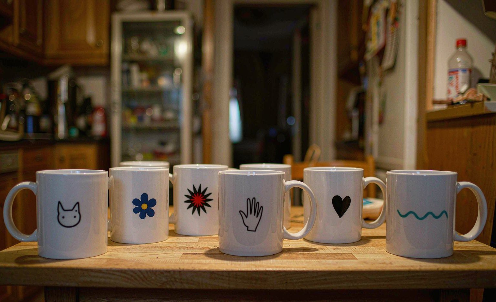

I Ordered 6 Custom Mugs for My Book Club: A Buyer's Order Log With Real Prices
Short answer: my order of 6 custom mugs at $14.99 each ($89.94 total, free shipping over $75) took 8 days from upload to doorstep, and every mug survived its first dishwasher cycle by accident and on purpose.
Bottom line: the detail that decides everything is the source photo: phone photos at 300 DPI printed clean, while the two screenshots I uploaded printed visibly soft.

Our book club turned five this year, and I wanted something better than a group chat thank-you. I ordered one mug per member from CustomGiftLab, each with a photo or an inside joke from our meetings, and I logged every step: what I paid, what I uploaded, what arrived, and what surprised me.
The order: six 11 oz ceramic mugs at $14.99 each. The cart totaled $89.94, which cleared the free-shipping threshold of $75, so delivery added nothing. The site promised 7 to 10 business days; the box arrived on day 8.
The Photos: Where the Order Was Won and Lost
Four mugs used phone photos taken in daylight, roughly 3000 pixels wide, and the prints came out sharp. Two mugs used screenshots pulled from our group chat, and the proofing tool flagged both with a low-resolution warning. I approved them anyway to test the warning system, and the difference is obvious: the screenshot mugs print soft around the edges. The warning is accurate. Trust it.
Proofing: The 100 Percent Zoom Rule
The previewer shows your design on a mug mock-up, which is charming but misleading, because the mock-up hides edge softness. Zooming the actual file preview to 100 percent caught a cropped chin on one photo and a date typo on another. Both fixes took a minute. Both would have been permanent after printing.
What Arrived and How It Packed
Each mug came in its own divided slot in a single box, with cardboard between handles. Nothing chipped. The print colors matched the proofs closely, with the slight matte softness typical of sublimation on ceramic. One mug went through a dishwasher cycle by accident in week one, and the print survived unchanged, which matches what the print team told me about top-rack placement.
The Order, Line by Line
| Item | Detail | Cost |
|---|---|---|
| Custom 11 oz mugs | 6 x $14.99 | $89.94 |
| Shipping | Free over $75 | $0.00 |
| Delivery time | Upload to doorstep | 8 days |
| Phone-photo prints | 4 of 6 mugs | Crisp |
| Screenshot prints | 2 of 6 mugs | Visibly soft |
Frequently Asked Questions
How much do custom mugs cost at CustomGiftLab?
Standard 11 oz custom mugs run $14.99, with larger 15 oz versions around $18.99. Free shipping kicks in over $75, which a six-mug order clears automatically.
Do custom mug prints survive the dishwasher?
Top-rack cycles do, in my test and in the print team's guidance. The safer routine is hand-washing with a soft sponge, which keeps sublimated prints bright for years.
What photo resolution do custom mugs need?
Around 300 DPI at print size; a 3000-pixel-wide phone photo is plenty for an 11 oz mug. The proofing tool warns on low resolution, and my screenshot test confirmed the warning is worth heeding.